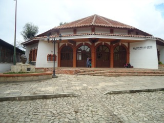
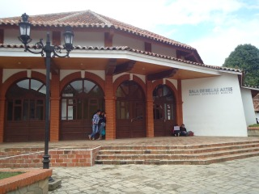
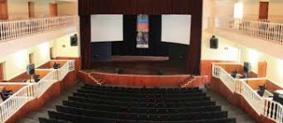
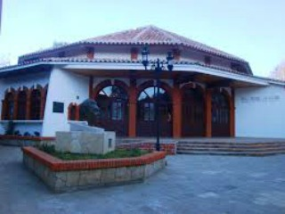
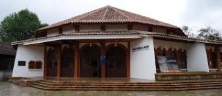

El teatro fue construido en el año de 1974 e inaugurado el 07 de julio del mismo año. Se encuentra frente al Centro Cultural El Carmen, el inmueble es ex profeso. Se realizan obras de teatro, danza, espectáculos infantiles, festivales, cine, conferencias, asambleas, reuniones de trabajo y exposiciones pictóricas. Este espacio es de estilo virreinal.
Se encuentra ubicada en la avenida miguel hidalgo a un costado de la biblioteca pública.
Si usted se encuentra ubicado en la plaza de la paz viendo de frente hacia la catedral puede caminar hacia su derecha pasando por la plaza 31 de Marzo como referencia encontrará el Banco Santander y Frente a este la Farmacia Similar entre estos dos lugares encontrará el andador eclesiástico, camine tres cuadras sobre el andador hasta encontrase de frente con el arco del carmen y a su izquierda verá la biblioteca camine hacia la biblioteca y pasando esta verá la sala de bellas artes.
En el lugar usted puede realizar actividades como:
* Fotografía
* Visita a lugares históricos
* Visita a centros culturales
* Visita a teatros
* Asistencia a congresos y seminarios
* Asistencia a eventos científicos
* asistencia a eventos culturales
* Asistencia a festivales de cine
* Asistencia a festivales de música
* Asistencia a festivales de rock
* Asistencia a festivales folklóricos
* Asistencia a festivales de ópera y ballet








posicione el mouse sobre las imágenes